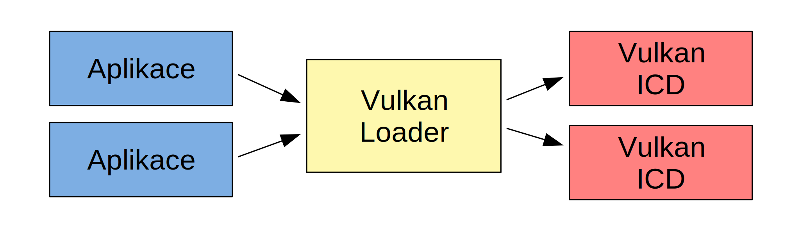
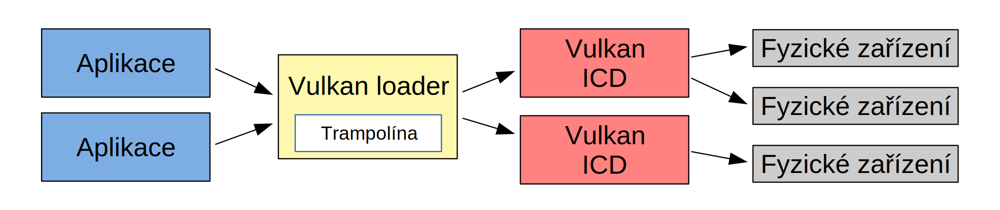
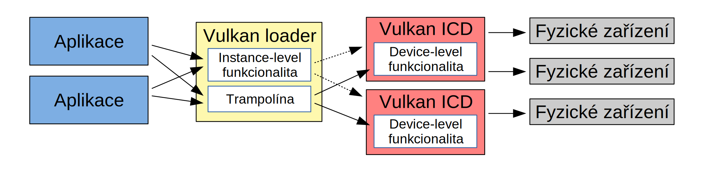

<h1>Vulkan: Architektura a ukazatele na funkce (3. díl)</h1>

<p>Po té, co jsme minule úspěšně nainstalovali Vulkan,
je čas se podívat na architekturu toho, co jsme zprovoznili.
A snad nejlépe objevíme architekturu Vulkanu na ukazatelích na funkce.</p>

<p>Vulkan je, dalo by se říci, multi-device, multi-vendor a multi-threaded rozhranní.
Česky: Vulkan podporuje více zařízení od více výrobců a za použití více vláken.
Toto je asi hlavní rozdíl od, například, OpenGL, kde jsme se museli spokojit
s jedním zařízením od jednoho výrobce a použítí více vláken bylo poněkud problematické.
Podpora více zařízení od více výrobců teoreticky přišla s knihovnou
<a href="https://github.com/freedesktop/glvnd">glvnd</a> (GL Vendor-Neutral Dispatch),
ale těžko říci, jak moc je opravdu používána. Určitě se ale shodneme, že je ideální mít API
navržené se všemi funkcemi hned od počátku tak, jak je tomu u Vulkan,
a mít tak naději na vyšší efektivitu, konzistentnost a přehlednost rozhranní.</p>

<p>Abychom nechodili dlouho kolem, můžeme si stáhnout
<a href="03-funcPointers.zip">zdrojové kódy</a> tohoto dílu a zkusit si je zkompilovat.
Po spuštění můžeme vidět různé výstupy, podle grafických karet,
které máme v počítači, a podle operačního systému, na kterém pracujeme.
Příklad výslupů:</p>

<p>Linux a mobilní Nvidia Quadro K1000M:</p>
<pre>
Instance function pointers:
   vkCreateInstance()     points to: /usr/lib/x86_64-linux-gnu/libvulkan.so.1
   vkCreateShaderModule() points to: /usr/lib/x86_64-linux-gnu/libvulkan.so.1
   vkQueueSubmit()        points to: /usr/lib/x86_64-linux-gnu/libvulkan.so.1
Device function pointers:
   Quadro K1000M
      vkCreateShaderModule() points to: /usr/lib/x86_64-linux-gnu/libnvidia-glcore.so.460.73.01
      vkQueueSubmit()        points to: /usr/lib/x86_64-linux-gnu/libGLX_nvidia.so.0
</pre>

<p>Windows 7 se třemi kartami od různých výrobců:</p>
<pre>
Instance function pointers:
   vkCreateInstance()     points to: C:\Windows\system32\vulkan-1.dll
   vkCreateShaderModule() points to: C:\Windows\system32\vulkan-1.dll
   vkQueueSubmit()        points to: C:\Windows\system32\vulkan-1.dll
Device function pointers:
   GeForce GTX 1050
      vkCreateShaderModule() points to: C:\Windows\system32\nvoglv64.dll
      vkQueueSubmit()        points to: C:\Windows\system32\nvoglv64.dll
   Radeon(TM) RX 460 Graphics
      vkCreateShaderModule() points to: C:\Windows\System32\amdvlk64.dll
      vkQueueSubmit()        points to: C:\Windows\System32\amdvlk64.dll
   Intel(R) HD Graphics 530
      vkCreateShaderModule() points to: C:\Windows\system32\igvk64.dll
      vkQueueSubmit()        points to: C:\Windows\system32\igvk64.dll
</pre>

<p>V obou výstupech vidíme výpis rozdělen na dvě části. První reprezentující
funkční pointery Instance a druhá funkční pointery od Devices, čili od zařízení.
Prvním tématem dneška tedy bude, co je to Instance a co je to Device.
S oběma jsme se již setkali v prvním díle našeho tutoriálu, kde jsme vytvořili
Instanci a vypsali jsme si názvy všech fyzických zařízení (physical devices)
v systému.</p>

<h3>Instance</h3>

<p>Instance, jednoduše řečeno, reprezentuje globální stav Vulkanu na straně aplikace.
Téměř ke všem globálním datům přistupujeme právě přes VkInstance objekt.
VkInstance pak patří k C-čkovému rozhranní, vk::Instance k C++.
Vytvoření vk::Instance je první věc, kterou s Vulkan API provedeme.
Kromě několika výjimek není dovoleno volat jakékoliv Vulkan funkce před vytvořením objektu VkInstance.
Ten vytvoříme podobně jako v prvním díle tutoriálu:</p>

<pre>
// Vulkan instance
vk::UniqueInstance instance(
   vk::createInstanceUnique(
      vk::InstanceCreateInfo{
         vk::InstanceCreateFlags(),  // flags
         &amp;(const vk::ApplicationInfo&amp;)vk::ApplicationInfo{
            "03-funcPointers",       // application name
            VK_MAKE_VERSION(0,0,0),  // application version
            nullptr,                 // engine name
            VK_MAKE_VERSION(0,0,0),  // engine version
            VK_API_VERSION_1_0,      // api version
         },
         0,        // enabled layer count
         nullptr,  // enabled layer names
         0,        // enabled extension count
         nullptr,  // enabled extension names
      }));
</pre>

<p>S rušením vk::Instnce je to podobně jako s jejím vytvářením:
Po jejím zrušení není povoleno volat jakékoliv Vulkan funkce a to jen s několika nepodstatnými výjimkami.
Jinými slovy, není dovoleno používat a dokonce ani uvolňovat Vulkanní objekty po zrušení vk::Instance.
Pokud tedy ukončujeme aplikaci bez řádného uvolnění všech objektů, např. náhlým voláním exit()
po nějaké kritické aplikační chybě, a v paměti zůstalo množství neuvolněných Vulkan objektů,
může být lépe vynechat i destrukci vk::Instance, alespoň z pohledu ladících nástrojů a validačních vrstev,
což je ale pokročilejší téma, kterému se dnes nebudeme věnovat.</p>

<h3>Fyzická zařízení</h3>

<p>Nyní k zařízením (devices). Zařízení dělíme na fyzická zařízení (physical devices)
a logická zařízení (logical devices, či pouze devices).
Fyzické zařízení označuje entitu přístupnou přes Vulkan API, která implementuje funkce tohoto API.
Zpravidla je to kus hardware, grafická karta, integrovaná grafika v procesoru, či výpočetní akcelerátor.
Fyzické zařízení je ve Vulkan API reprezentováno handlem VkPhysicalDevice.
My budeme používat vk::PhysicalDevice jako jeho C++ zapouzdření. Zajímavostí je, že
handle VkPhysicalDevice neuvolňujeme. Ty má ve vlastnictví
VkInstance a ta je také odpovědná za jejich uvolnění.</p>

<p>Vulkanní fyzická zařízení typicky používáme při startu aplikace, abychom ověřili,
které všechny funkcionality, featury, formáty,... dané zařízení podporuje.
Mezi zařízeními si pak můžeme vybrat to, které nám nejvíce vyhovuje.
Například můžeme vynechat integrovanou grafiku a vybrat místo ní diskrétní.
Můžeme ověřit, zda je podporován geometry shader, což může být důležité zejména
na mobilních zařízeních, kde geometry shader není pravidlem.
Nebo můžeme zjistit, že máme dvě stejné grafické karty podporující SLI
a můžeme je v tomto režimu použít.</p>

<p>Jak tedy získat seznam fyzických zařízení, která jsou k dispozici?
Získáme je z instance zavoláním metody enumeratePhysicalDevices():</p>

<pre>
vector<vk::PhysicalDevice> deviceList = instance->enumeratePhysicalDevices();
</pre>

<p>Jak vidíme, je použito slovíčko enumerate, nikoliv createPhysicalDevices.
vk::PhysicalDevices nevytváříme (create), ale &quot;enumerujeme&quot;.
To znamená, že si uděláme jejich výčet.
Toto enumerate jako by nám naznačovalo, co jsem zmínil výše,
že není naší zodpovědností uvolňovat VkPhysicalDevices po použití.
Proto vk::PhysicalDevice nemá metodu destroy()
a nic jako vk::UniquePhysicalDevice neexistuje.
Uvolnění VkPhysicalDevice je odpovědnost vk::Instance.</p>

<p>Nyní tedy máme seznam fyzických zařízení. Co s tím můžeme dělat?
Můžeme například vypsat jejich názvy, což jsme už udělali posledně:</p>

<pre>
for(vk::PhysicalDevice pd : deviceList) {
   vk::PhysicalDeviceProperties p = pd.getProperties();
   cout &lt;&lt; "   " &lt;&lt; p.deviceName &lt;&lt; endl;
}
</pre>

<p>Co nás ale asi bude zajímat nejvíce je, že z fyzického zařízení můžeme vytvořit zařízení logické.</p>

<h3>Logická zařízení</h3>

<p>Logické zařízení vytvoříme z fyzického zavoláním metody createDevice() či createDeviceUnique().
My použijeme tento kód:</p>

<pre>
vk::UniqueDevice device =
   pd.createDeviceUnique(
      vk::DeviceCreateInfo(
         vk::DeviceCreateFlags(),  // flags
         1,  // at least one queue is mandatory
         &amp;(const vk::DeviceQueueCreateInfo&amp;)vk::DeviceQueueCreateInfo{  // pQueueCreateInfos
            vk::DeviceQueueCreateFlags(),  // flags
            0,  // queueFamilyIndex
            1,  // queueCount
            &amp;(const float&amp;)1.f,  // pQueuePriorities
         },
         0, nullptr,  // no layers
         0, nullptr,  // no enabled extensions
         nullptr  // enabled features
      )
   );
</pre>

<p>Když už jsme vytvořili z fyzického zařízení logické, zbývá objasnit, co to to logické zařízení je.
Logické zařízení (logical device) reprezentuje rozhranní k fyzickému zařízení, někdy i ke skupině zařízení.
Logické zařízení budeme používat drtivou většinu času při práci s Vulkan API
a používáme ho k vytváření většiny Vulkanních objektů, rendrování, počítání a hromadě dalších věcí.
Vukan reprezentuje logické zařízení handlem VkDevice a v C++ pak třídou vk::Device.
Protože i Vulkan vynechává slovo logical pro označení logical devices, budeme tak často činit i my.
Pokud budeme hovořit o device nebo o zařízení, budeme tím mít na mysli logické zařízení.
Pokud budeme hovořit o fyzickém zařízení, použijeme vždy obě slova.</p>

<p>A proč Vulkan pojal toto rozdělení na fyzická a logická zařízení?
Jedna výhoda je, že jsme schopni zjistit parametry fyzického zařízení, aniž bychom museli vytvořit zařízení logické,
což by mohlo stát kus výpočetního výkonu a kus paměti.
Můžeme si tedy vybrat mezi fyzickými zařízeními to nejvhodnější,
a pak až vytvořit logické zařízení.
Druhá výhoda je, že logické zařízení si vytvoříme přesně na míru. Oznámíme, kolik a jakých front (queues)
chceme vytvořit, jakou funkcionalitu (features) a která rozšíření (extensions) budeme používat, a tak dále.
A ještě jedna výhoda: můžeme vzít více fyzických zařízení a vytvořit z nich jedno logické zařízení,
což však samozřejmě platí pouze v případě, že jsou daná fyzická zařízení kompatibilní a podporují tuto funkcionalitu.
Můžeme tak například spřáhnout dvě karty ve SLI módu do jednoho logického zařízení
a využít teoreticky až dvojnásobného výpočetního výkonu.</p>

<h3>Architektura Vulkan</h3>

<p>Architekturu Vulkan bychom mohli zjednodušit do následujícího obrázku:</p>



<p>Vidíme zde aplikaci či množství aplikací, které využívají Vulkan API.
Dále vidíme Vulkan loader, který je využíván aplikacemi, a který předává práci jednotlivým
ovladačům zvaným Vulkan ICD (Installable Client Driver).
Tento ovladač pak komunikuje s fyzickým zařízením, případně s více fyzickými zařízeními,
které má na starosti.</p>

<p>Vulkan loader je v době psaní tohoto článku na linuxu implementován
knihovnou libvulkan.so.1 a na Windows vulkan-1.dll.
Vulkan ICD nemá standardní pojmenování souboru. Každé ICD může používat jiný ovladač a
tedy i jiný název souboru. Každý výrobce tak má typicky jiné pojmenování.
Uveďme si pár příkladů, na které můžeme narazit v době psaní tohoto článku.
Na Windows to můžeme být například nvoglv64.dll pro Nvidii, amdvlk64.dll pro AMD
a igvk64.dll pro Intel. Na Linuxu třeba libnvidia-eglcore.so.460.73.01,
libvulkan_radeon.so a libvulkan_intel.so.</p>

<p>Celá tato architektura nakonec poskytuje množství Vulkan funkcí implementované ve Vulkan loaderu a Vulkan ovladači (ICD),
které aplikace může zavolat. Pojďme se tedy podívat, jak volání funkcí ve Vulkan funguje.

<h3>Statické volání Vulkan funkcí</h3>

<p>V praxi máme dvě možnosti, jak volat Vulkan funkce: staticky a dynamicky.
Prvně si popišme statické volání, které je jednodušší.
Pro statické volání jsou Vulkan funkce poskytovány knihovnou Vulkan loader, takže ji dynamicky přilinkujeme k aplikaci.
Zjednodušeně řečeno pak věci fungují jako na následujícím obrázku:</p>



<p>Při statickém volání Vulkan funkce implementované ve Vulkan loaderu
je do mnoha funkcí jako první parametr předáván VkDevice, tedy handle logického zařízení.
Ve Vulkan loaderu je následně, zjednodušeně řečeno, proveden "odraz" z trampolíny
podle parametru VkDevice do odpovídajícího ovladače (Vulkan ICD).
Ovladač volání obslouží a je-li potřeba, provede komunikaci s odpovídajícím fyzickým zařízením,
což je obyčejně jedna z grafických karet. Připomeňme také, že jeden driver může ovládat
i více fyzických zařízení.</p>

<h3>Device-level a Instance-level funkcionalita</h3>

V minulém odstavci jsem tvrdil, že mnoho funkcí bere jako první parametr VkDevice.
Mimo jiné jsou ale i funkce, které berou jako první parametr VkInstance.
To nás navádí na úvahu, že ve Vulkan máme funkcionalitu na úrovni zařízení (device-level)
a funkcionalitu na úrovní instance (instance-level).
Předchozí obrázek tedy můžeme rozkreslit:</p>



<p>Chceme-li například zadat nějakou práci logickému zařízení, což je device-level požadavek,
aplikace zavolá Vulkan funkci ve Vulkan loaderu,
tam se provede "odraz" z trampolíny do odpovídajícího Vulkan ovladače (ICD) a ten zařídí obsloužení našeho požadavku.
Pokud se ale například dotazujeme na seznam fyzických zařízení, tak to je požadavek na úrovni instance.
V takovém případě Vulkan loader nejde přes trampolínu, ale sám se ujme tohoto požadavku.
Postupně projde všechny Vulkan ovladače a dotáže se jich přes interní API na seznam
fyzických zařízení, která každý ICD poskytuje. Cesta přes interní API je naznačena tečkovanými šipkami.
Na závěr je seznam všech fyzických zařízení všech Vulkan ovladačů vrácen aplikaci.</p>

<p>Vidíme tedy rozdíl: device-level funkcionalita je přesměrovávána přes trampolínu ihned do Vulkan ovladače,
kdežto instance-level funkcionalita je obsluhována už na úrovni Vulkan loaderu.
Toto rozlišení je pro nás podstatné, neboť někdo se může zeptat, zda ta trampolína není zbytečná
výkonnostní zátěž pro device-level volání a zda by nešla odstranit.
A zde se dostáváme k dynamickému volání Vulkan funkcí.</p>

<h3>Dynamické volání Vulkan funkcí</h3>

<p>Kromě statického volání Vulkan funkcí můžeme některé, popřípadě všechny, funkce
volat dynamicky, tedy přes námi inicializovaný ukazatel na funkci.
A proč bychom to chtěli dělat?
První důvod je volání funkcí různých rozšíření (extensions).
Tyto funkce nemusí být součástí Vulkan loaderu, zvláště pokud se jedná o velmi nové rozšíření nějakého výrobce.
Řešení, které se nabízí, je získat ukazatele na funkce tohoto rozšíření a volat tyto funkce dynamicky.
Druhý důvod je, že někomu může vadit výkonnostní ztráta na trampolíně,
která je typicky malá a obyčejně ani nestojí za řešení.
Nicméně někdo může preferovat volat funkce ovladače přímo
a ušetřit tak trochu strojového času.
Třetí důvod je v nejistotě, zda na cílovém počítači je vůbec Vulkan loader nainstalován.
Zvláště na starých počítačích to nemusí být pravidlo, nebo například pokud nejsou nainstalovány grafické ovladače
či odpovídající balíčky na Linuxu. Při statickém volání Vulkan funkcí, kdy je Vulkan loader dynamicky přilinkován
k aplikaci se tak aplikace odmítne spustit, neboť ji chybí knihovna Vulkan loaderu.
Naproti tomu při uživatelském načítání dynamické knihovny aplikace zjistí,
že nemůže načíst Vulkan loader do paměti a má možnost reagovat na tuto situaci,
například zobrazením chybové hlášky a popisem problému, který se vyskytl,
což může být podstatně lepší než systémová chyba říkající něco ve smyslu,
že aplikaci nešlo spustit. Jak tedy na to?</p>

<p>Pokud je potřeba Vulkan loader načíst do paměti, protože např. není dynamicky přilinkován,
musíme tuto operaci provést sami. Buď vlastním kódem nebo můžeme využít vk::DynamicLoader,
který by měl být funkční od verze 1.2.146.
Teoreticky, pokud budeme používat pouze jedno logické zařízení,
můžeme využít i vk::DispatchLoaderDynamic. Já osobně bych se ale asi vydal jinou cestou.
To ale teď nechme stranou a snad se jednou v budoucnosti k tomuto tématu vrátíme
a věnujeme mu náležitý prostor. Místo toho pojďme na Vulkan funkce a ukazatele na ně.</p>

<p>Vulkan nám poskytuje dvě funkce pro zjištění ukazatelů na Vulkan funkce:
vkGetInstanceProcAddr() a vkGetDeviceProcAddr(). Tyto funkce jsou nám v C++ k dispozici jako
vk::Instance::getProcAddr() a vk::Device::getProcAddr().
vkGetInstanceProcAddr() vrací ukazatele na funkce na úrovni instance (instance-level).
Pokud se jí dotážeme na funkci z úrovně zařízení (device-level), vrátí nám ukazatel
do Vulkan loaderu, tedy na vstupní bod před trampolínou. Trampolína tedy bude prováděna.
Pokud ale na device-level funkcionalitu použijeme vkGetDeviceProcAddr(),
je nám vrácen ukazatel do Vulkan ovladače (ICD).
V tom případě voláme funkci ICD přímo a žádná trampolína se neprovádí.
Vše je zobrazeno na následujícím obrázku:</p>


<p>Jak vidíme, instance-level volání je obslouženo jako v předešlém případě, kdežto
device-level volání vynechává trampolínu a jde přímo do ovladače (ICD).
Můžeme se znovu podívat do výpisů, tentokrát pro změnu na notebook s Linuxem (Ubuntu 21.04)
se dvěma grafikama a třetí softwarovou implementací Vulkan:</p>

<pre>
Instance function pointers:
   vkCreateInstance()     points to: /lib/x86_64-linux-gnu/libvulkan.so.1
   vkCreateShaderModule() points to: /lib/x86_64-linux-gnu/libvulkan.so.1
   vkQueueSubmit()        points to: /lib/x86_64-linux-gnu/libvulkan.so.1
Device function pointers:
   Quadro RTX 3000
      vkCreateShaderModule() points to: /lib/x86_64-linux-gnu/libnvidia-eglcore.so.460.73.01
      vkQueueSubmit()        points to: /lib/x86_64-linux-gnu/libnvidia-eglcore.so.460.73.01
   llvmpipe (LLVM 11.0.1, 256 bits)
      vkCreateShaderModule() points to: /usr/lib/x86_64-linux-gnu/libvulkan_lvp.so
      vkQueueSubmit()        points to: /usr/lib/x86_64-linux-gnu/libvulkan_lvp.so
   Intel(R) UHD Graphics (CML GT2)
      vkCreateShaderModule() points to: /usr/lib/x86_64-linux-gnu/libvulkan_intel.so
      vkQueueSubmit()        points to: /usr/lib/x86_64-linux-gnu/libvulkan_intel.so
</pre>

<p>Vidíme, že vkGetInstanceProcAddr() nám vždy vrátila ukazatel na Vulkan loader (libvulkan.so.1)
a vkGetDeviceProcAddr() vrátila pro device-level funkce adresu z ovladače ICD. Tedy vše tak, jak jsme si popsali.
Výpisu ukazatelů ve zdrojácích pak odpovídá tento kód:</p>

<pre>
// function pointer of vkCreateInstance()
cout << "Instance function pointers:" << endl;
cout << "   vkCreateInstance()     points to: " << getLibraryOfAddr(reinterpret_cast<void*>(instance->getProcAddr("vkCreateInstance"))) << endl;
cout << "   vkCreateShaderModule() points to: " << getLibraryOfAddr(reinterpret_cast<void*>(instance->getProcAddr("vkCreateShaderModule"))) << endl;
cout << "   vkQueueSubmit()        points to: " << getLibraryOfAddr(reinterpret_cast<void*>(instance->getProcAddr("vkQueueSubmit"))) << endl;
</pre>

<p>vkGetInstanceProcAddr() je zavolána v C++ skrz instance->getProcAddr() a vrácená adresa
je předána funkci getLibraryOfAddr(), která vypíše název knihovny či modulu, které patří daná adresa.
Zájemci si mohou kód getLibraryOfAddr() prostudovat, nicméně my v tomto tutoriálu nebudeme od Vulkan témat odbočovat.
Místo toho zmiňme, že velmi podobný kód jsme použili pro device-level funkce:</p>

<pre>
// functions get from the device
cout << "      vkCreateShaderModule() points to: " << getLibraryOfAddr(reinterpret_cast<void*>(device->getProcAddr("vkCreateShaderModule"))) << endl;
cout << "      vkQueueSubmit()        points to: " << getLibraryOfAddr(reinterpret_cast<void*>(device->getProcAddr("vkQueueSubmit"))) << endl;
</pre>

<p>vkGetDeviceProcAddr() voláme skrz device->getProcAddr(). Ta nám vrátí device-level ukazatel na funkci
a opět ve výpisu vidíme, které knihovně či modulu vrácená adresa patří.</p>

<p>Někdy se stane, že ve výpisu vkCreateShaderModule() a vkQueueSubmit()
uvidíme různé soubory, např. libnvidia-glcore.so.460.73.01 a libGLX_nvidia.so.0 . To není na závadu.
Je to věc implementace daného výrobce, že ovladač je rozdělen do více souborů.</p>

<p>V našem tutoriálu, aby byl co nejčitelnější, nebudeme komplikovat náš kód ukazateli na Vulkanní funkce
a dynamickým voláním kromě případů, kdy budeme používat Vulkanní rozšíření (extensions).
Možná, ale této super-optimalizaci věnujeme nějaký díl v budoucnosti, aby bylo učiněno za dost těm,
kteří této věci chtějí využít. Možná někteří by poukázali, že vulkan_raii.hpp z Vulkan SDK již tento přístup používá,
nicméně já osobně si stále ještě nejsem návrhem této knihovny jistý.</p>

<p>Pro zájemce o více detailů k architektuře Vulkan a k ukazatelům na Vulkanní funkce, Vulkan loader a ICD drivery
odkazuji na dokument <a href="https://github.com/KhronosGroup/Vulkan-Loader/blob/master/loader/LoaderAndLayerInterface.md">
Architecture of the Vulkan Loader Interfaces</a> publikovaný konsorciem Khronos.
My jsme si za účelem přehlednosti náš výklad zjednodušili a vynechali koncept vrstev (layers)
a přehršel implementačních detailů, které tam zájemci najdou.
Připomínám i link na <a href="https://www.khronos.org/registry/vulkan/#apispecs">Vulkan dokumentaci</a>,
která obsahuje detailnější informace k vulkanním funkcím zmíněným v tomto díle.
Jak zaznělo v prvním díle, doporučuji spíše verzi &quot;Core API&quot;,
případně &quot;Core API + Khronos extensions&quot;.

<h3>Shrnutí</h3>

<p>V článku jsme si vysvětlili, co je to instance a device, rozdíl mezi physical device a logical device,
popsali zjednodušeně Vulkan architekturu, co je to Vulkan loader a Vulkan ICD,
popsali rozdíl mezi instance-level a device-level funkcionalitou
a statickým a dynamickým voláním vulkanních funkcí.
V demonstrační aplikaci jsme si udělali výčet fyzických zařízení.
Pak jsme pro každé fyzické zařízení vytvořili i logické zařízení a prozkoumali, co nám vrací
funkce vk::Instance::getProcAddr() a vk::Device::getProcAddr(), když se jimi dotážeme na různé Vulkan funkce.
Příště zkusíme vyčíst více informací z fyzických zařízení
a přes příště zkusíme už pracovat s logickým zařízením.</p>
